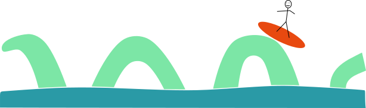

The Big Surf seminar will not run in the first 4 months of 2022
Please contact the organizers (Federica Fanoni,
Tyrone Ghaswala and
Alan McLeay) if you would like to revive the seminar for the beginning of 2022, be added to the mailing list, suggest a speaker, or receive the password for the Gather Town space. The Big Surf Gather Town remains available to those who wish to use it (link)
There are no future meetings planned at the moment.

In this talk, I will be defining the grand arc graph for infinite-type surfaces. This simplicial graph is motivated by the works of Fanoni-Ghaswala-McLeay, Bavard, and Bavard-Walker to define an infinite-type analogue of the curve graph. As in these earlier works, the grand arc graph is connected, (oftentimes) infinite-diameter, and delta hyperbolic. Moreover, the mapping class group acts on it by isometries, and the action is continuous on the visible boundary. This is joint work with Yvon Verberne.
November 17th, 2021: Mark BellWe will give a quick demo of the Python package bigger. This can be used to draw pictures of laminations on infinite-type surfaces and see how big mapping classes act on them. It’s like flipper and curver, but can handle infinite-type surfaces through being lazy about the computations it performs.
November 17th, 2021: Michael LandryEndperiodic surface automorphisms arise in nature as monodromies of noncompact leaves of depth 1 foliations of 3-manifolds. In the early 90s Handel and Miller studied these maps and proved that they exhibit much of the behavior present in the finite type setting as described by the Nielsen-Thurston classification. In particular, endperiodic maps preserve (up to homotopy) a pair of transverse laminations which are stretched and squeezed. I will discuss these Handel-Miller laminations and how they are related to the stable and unstable foliations of certain flows in 3-manifolds. This is joint work in progress with Yair Minsky and Samuel Taylor.
October 20th, 2021: Hannah HogansonRecently Algom-Kfir and Bestvina introduced the group Maps(X) for locally finite graphs X as a proposed analogue for Out(F_n) in the infinite-type setting. We will discuss the classification of infinite-type graphs, the group Maps(X), and explore some of its similarities and differences with mapping class groups of infinite-type surfaces. We will conclude by discussing the coarse geometry of PMaps(X), which is joint work with George Domat and Sanghoon Kwak.
September 15th, 2021: Priyam PatelIn this talk, I’ll present a new way of constructing subgroups of infinite-type mapping class groups via a combination theorem for indicable subgroups. One of the applications of our main theorem is a construction for right-angled Artin groups in big mapping class, which I’ll also describe. This work is joint with Carolyn Abbott, Hannah Hoganson, Marissa Loving, and Rachel Skipper.
June 3rd, 2021: Justin MalesteinIn this talk, I will discuss the problem of when big mapping class groups are generated by involutions. Specifically, I will talk about surfaces with a self-similar ends space and 0 or infinite genus. In the case where the ends space has infinitely many maximal ends, we can show that the mapping class group is normally generated by a single involution, boundedly generated by involutions, and uniformly perfect. Conversely, in the case where there is one maximal end, we can produce infinitely many examples of mapping class groups that are neither perfect nor generated by torsion elements. Joint work with Jing Tao.
May 20th, 2021: Barbara Schapira
It is well known since decades that the number of (oriented) closed geodesics of a compact hyperbolic surface of length at most \(T\) grows as \(\frac{e^T}{T}\) when \(T\to \infty\). This has been generalized to noncompact hyperbolic surfaces with a fundamental group of finite type.
In a recent work with Samuel Tapie, we prove that a similar estimate is valid on a much larger class of geometrically infinite surfaces, as soon as a certain measure, the so-called Bowen-Margulis measure, is finite.
In my talk, I will precise the context, the statement, give some examples, and if time allows, explain some arguments.
The paper proving this result is here.
In this talk we will discuss the classification of non-orientable surfaces of infinite type, and we will see which "classical" results are still valid in this context (in particular the first cohomology group of the pure mapping class group). All of this will be done while highlighting the differences between this case and the orientable case.
April 22th, 2021: Ryan DickmannI will talk about the widely unknown classification of surfaces with boundary by Brown and Messer and how it can be used to cut a surface into pieces that I call "Sliced Loch Ness Monsters". The mapping class groups of the Sliced Loch Ness Monsters are uniformly perfect, and this can be combined with the aforementioned tool (and the work of Domat in the cases with compact boundary) to classify the surfaces with perfect pure mapping class groups.
April 8th, 2021: Anschel Schaffer-CohenUsing the framework of coarsely bounded generating sets, we show that a large class of surfaces— the translatable/avenue surfaces without significant genus— are quasi-isometric to an infinite-dimensional cube graph. This has two consequences, each of which is in contrast to finite-type mapping class groups: quasi-isometric non-rigidity, and a-T-menability.
March 25th, 2021: Hugo ParlierThis talk will be about ideal triangulations of infinite type surfaces. The first part is about joint work with Alan McLeay where we show that they exist. Then, in joint work with Ariadna Fossas, we study a type of flip graph for the triangulations.
March 11th, 2021: Benjamin BranmanWe study the pants graph of surfaces of infinite type. When S is a surface of infinite type, the usual definition of the graph of pants decompositions yields a graph with infinitely many connected-components. In the first part of our talk, we study this disconnected graph. In particular, we show that the extended mapping class group of S is isomorphic to a proper subgroup of the automorphism group of the pants graph, in contrast to the finite-type case.
In the second part of the talk, motivated by the Metaconjecture of Ivanov, we seek to endow the pants graph with additional structure. To this end, we define a coarser topology on the pants graph than the topology inherited from the graph structure. We show that our new space is path-connected, and that its automorphism group is isomorphic to the extended mapping class group.
We discuss the basic theory of endperiodic automorphisms
of sufaces - primarily the infinite genus case. Associated to any
such map there is a depth one foliation of a 3-manifold. This is
the closest type of a foliation to a fibration over the circle.
We use hyperbolic geometry and the study of the homeomorphism
to produce invariant geodesic laminations in the surface. In
the irreducible case these geodesic laminations fill the surface.
A topological group has the Rokhlin property if it has a dense conjugacy class. In this talk, we will give a complete classification of those mapping class groups with the Rokhlin property (and in particular, we will see that uncountably many do in fact have the Rokhlin property). Will we also motivate our interest in the topic and describe some algebraic consequences of this dynamical/topological property. This is joint work with Justin Lanier.
January 28th, 2021: Javier Aramayona
This talk will focus on injective homomorphisms between big mapping class groups. Using a covering construction, we will exhibit two infinite-type surfaces without boundary whose mapping class group admits a
continuous and injective, but not surjective, self-homomorphism. In addition, by means of a "surface doubling" argument, we will give uncountably many surfaces without boundary for which their pure mapping class group is
not co-Hopfian.
We will then study (continuous) injective homomorphisms between arbitrary big mapping class groups that send Dehn twists to Dehn twists. We will prove that, provided the domain surface has positive genus, any such homomorphism is induced by a proper subsurface embedding.
This is joint work with Chris Leininger and Alan McLeay.
In the first semester of Big Surf, we have seen many results about topological infinite-type surfaces, sometimes equipped with a hyperbolic structure. I would like to start the new session by convincing you that there are also interesting questions when equipping an infinite-type surface with a flat structure.
The Veech group is the stabilizer of a flat surface under the \(\mbox{SL}(2,\mathbb{R})\)-action - it can be seen as an analogue of the mapping class group in the flat setting. I will use a specific example of an infinite-type flat surface and determine its Veech group to introduce you to the concepts and new questions.
The focus of this talk is on geometric conditions for when a Riemann surface is of so-called parabolic type. That is, it does not support a Green's function or equivalently the geodesic flow on the unit tangent bundle is ergodic. Given a Riemann surface X of arbitrary topological type and a hyperbolic pants decomposition of X we obtain sufficient conditions for parabolicity of X in terms of the Fenchel-Nielsen parameters of the decomposition. In particular, we initiate the study of the effect of twist parameters on parabolicity. This is joint work with Hrant Hakobyan and Dragomir Saric.
November 19th, 2020: Elizabeth FieldIn this talk, we will discuss mapping tori associated to irreducible, end periodic homeomorphisms of certain infinite-type surfaces. Inspired by a theorem of Brock in the finite-type setting, we will relate the minimal convex core volume of such a mapping torus to the translation distance of its monodromy on (a certain subgraph of) the pants graph. This talk represents joint work with Heejoung Kim, Chris Leininger, and Marissa Loving.
November 12th, 2020: Lvzhou ChenBavard-Walker studied the complete ray-and-loop graph, where vertices are short rays, long rays, and loops. They showed that there is a main component containing all short rays and loops, which is quasi-isometric to the loop graph (known to be hyperbolic and has infinite diameter). All remaining components are cliques of the so-called high filling rays. Such cliques are in one-to-one correspondence to points in the Gromov boundary of the loop graph. They showed that any ray intersecting all loops and short rays either is high-filling or has distance 2 to some loop on the complete ray-and-loop graph (i.e. is 2-filling). In this joint work with Alexander Rasmussen, we give flexible constructions to show 2-filling rays exist and abound on the plane minus a Cantor set.
October 29th, 2020: Kathryn MannA group G has the (strong) automatic continuity property if every group homomorphism from G to any other separable group is necessarily continuous. In other words, the algebraic structure of the group remembers all its topology! Groups that are known to have this property are, for the most part, the automorphism groups of highly homogeneous structures. I'll show how some big mapping class groups have this property, some don't, and for most of them we don't know! I'll also discuss other related open questions.
October 15th, 2020: George DomatPure mapping class groups of finite type surfaces are known to have trivial abelianizations (perfect) once the surface has genus at least 3 due to a classic result of Powell. Aramayona-Patel-Vlamis showed that this is not always true for pure mapping class groups of infinite type surfaces. We show that this is in fact never the case for any infinite type surface. Furthermore, we show that the abelianization of the closure of the compactly supported mapping classes contains a direct summand isomorphic to an uncountable direct sum of \(\mathbb{Q}\)s. To find nontrivial elements in the abelianization we use the projection complex machinery of Bestvina-Bromberg-Fujiwara to build quasimorphisms that "see" certain infinite products of Dehn Twists.
October 1st, 2020: Rylee LymanIn 1983, Kerckhoff showed that finite subgroups of mapping class groups of finite-type surfaces always arise as groups of isometries of some hyperbolic metric on the surface. We extend this result to orientable, infinite-type surfaces. In this talk I will discuss the theorem, sketch its proof, and discuss some consequences for the classification of subgroups of big mapping class groups.
September 17th, 2020: Tarik AougabAllcock proved that for any countable group G, there exists a surface S (which is necessarily of infinite type when G is not finite) and a hyperbolic metric on S so that the corresponding isometry group is precisely G. We ask and answer a related question: fixing the topology of S, which countable groups arise as isometry groups of hyperbolic metrics on S? When S has a countable end space and every end is accumulated by genus, we give a complete answer to this question, and when the countability assumption is dropped, we give an almost complete answer. We'll discuss some group theoretic and topological applications, and ideas behind (some of) the proofs. This represents joint work with Priyam Patel and Nicholas Vlamis.
September 3rd, 2020: Kasra RafiWe apply the framework of Rosendal for the study of the coarse geometry of non locally compact groups in the setting of Mapping Class Groups of surfaces of infinite type. Under mild conditions, we give a classification of which Mapping Class Groups have a well defined quasi-isometry type and, amount those, which Mapping Class Groups are quasi-isometric to a point (Joint with Kathryn Mann). We give a classification of Mapping Class Groups that act non-trivially on a hyperbolic space (Joint with Horbez and Qing). We also show that the presence of an essential shift implies that the Mapping Class Group has infinite asymptotic dimension (Joint with Grant and Verberne). We will close some conjectures and open problems regarding the geometry of Big Mapping Class Groups.